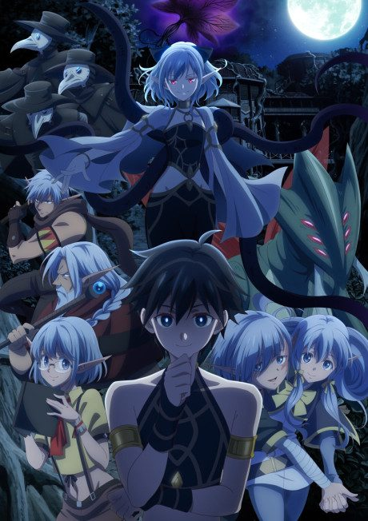
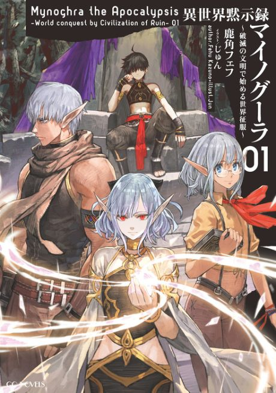

Apocalypse Bringer Mynoghra: World Conquest Starts with the Civilization of Ruin
異世界黙示録マイノグーラ ～破滅の文明で始める世界征服～
The anime takes the story to Not checked.
6.6AniList score
—Animeter, no votes yet
13episodes
Is it worth pushing through?
Built from what visitors report across all 13 episodes.
Loading reports…Checking what other people said about this one.
Sign in above with your email to add your report.